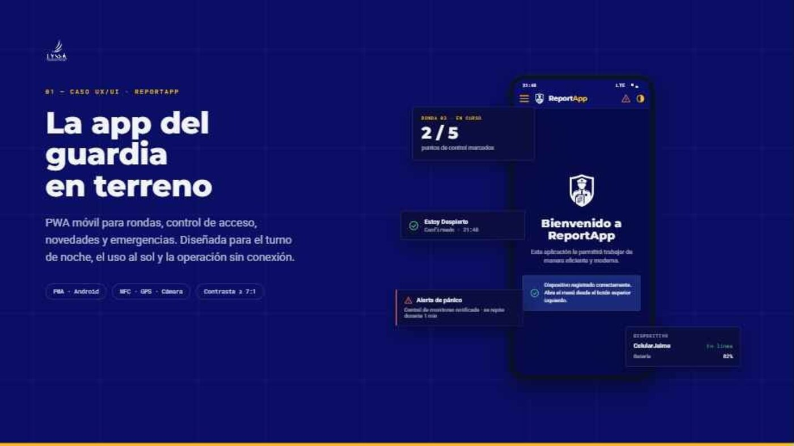
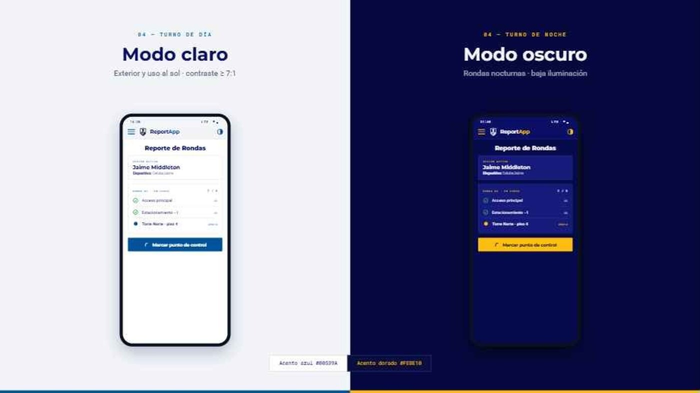

Propuesta visual original
Láminas del trabajo de diseño para ReportApp/ControlApp: la app del guardia en terreno y las interfaces en modo claro y oscuro. Haz clic para ampliar.




UX/UI Design
Proyecto UX/UI desarrollado para Lyssa, empresa de seguridad, enfocado en el diseño visual de app y páginas web. Se trabajaron interfaces en modo claro y modo oscuro, considerando el uso por guardias en rondas diurnas y nocturnas, y un panel de administración para la operación. Aquí se muestran las aplicaciones reales: ControlApp (guardias) y Admin (administración).
Son los builds reales de ambas aplicaciones (React + MUI), servidos localmente en los puertos 8014 y 8015 — ver README del repo. El ingreso requiere credenciales del entorno de Lyssa.
Láminas del trabajo de diseño para ReportApp/ControlApp: la app del guardia en terreno y las interfaces en modo claro y oscuro. Haz clic para ampliar.


El modo oscuro no es cosmético: en rondas nocturnas una pantalla clara deslumbra y delata la posición del guardia. La paleta trabaja el azul marino y el amarillo institucional de Lyssa manteniendo contraste en ambos modos, y las acciones principales quedan al alcance del pulgar.